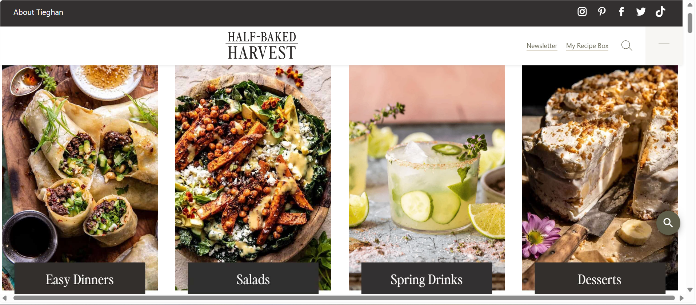
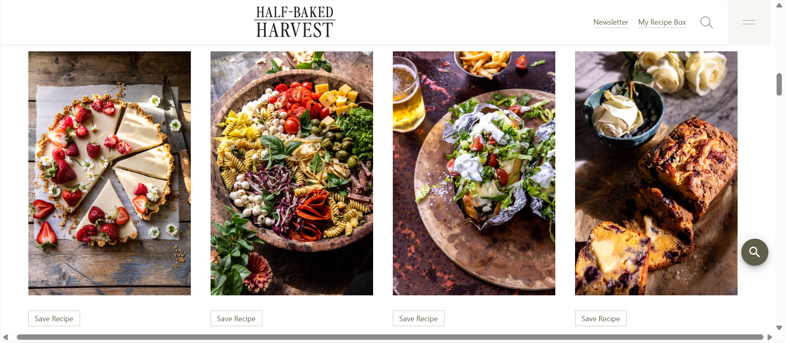
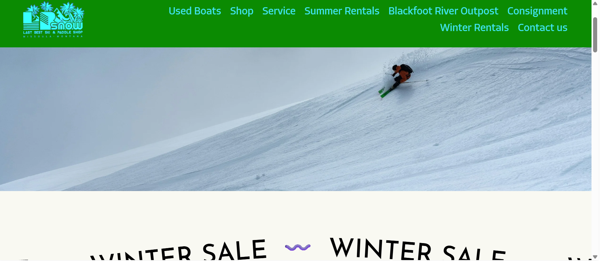

Color Theory in Web Design
Color is embedded into every web page we look at, whether we are aware of it or not. When I think of web pages I like and dislike, color happens to be a main factor in the overall look and feel of the website.
An example of a web page I like comes from a food blogger, famously known as Half-Baked Harvest: https://www.halfbakedharvest.com. The main focus on her website is recipes, and she is a very talented food photographer. The colors in her food photos are contrasted with shadows and natural sunlight, making the food look vivid and appetizing. The basis of her photos are neutral tones in the browns and tans of pasta and baked goods. To add a pop of color and flavor, she uses a lot of fresh ingredients. Her images include rich shades of green from kale, spring onions, and diced cucumbers.

She adds touches of reds like strawberries, chili oil, pomegranate seeds, and halved cherry tomatoes. This creates an effect where the photos laid out on her website create multiple cohesive tiles whose sum is greater than its parts.

In terms of color for her website, she lets her food photography shine. Her web page color choices are muted and minimal, choosing main tones of olive green and coal gray with a secondary sage color. The blend of bright photos and dark, natural website colors creates an organic and fresh look that is appealing to look at, exactly what you'd want in a food website.
In contrast, this web page for an outdoor gear rental store LB Snow https://www.lastbestskiandpaddle.com uses neon blue with a bright forest green.

The bold green background makes the text more difficult to read in combination with the neon blue. It is hard on the eyes and slightly overwhelming. The web page is clearly bare bones, and honestly, it's a fitting image for a company that sells outdoor gear for outdoor adventures. Their website looks like little time was spent on their online presence. They'd rather be hitting the slopes, and who can blame them?